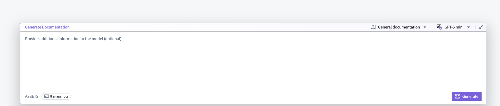
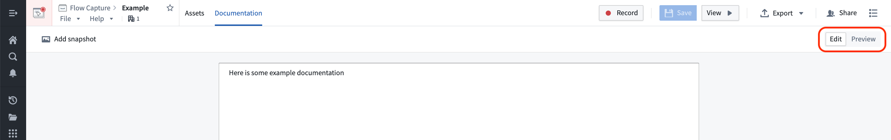
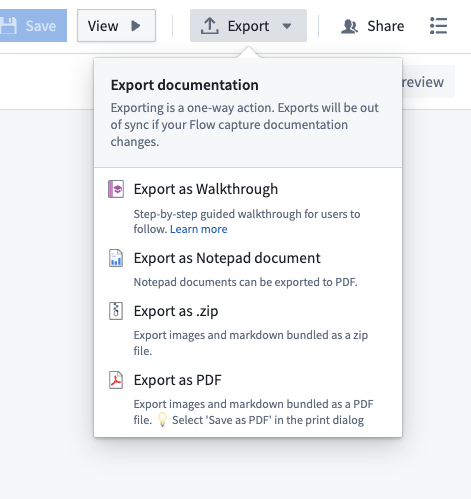

After recording a workflow, you can use the prompt bar at the bottom of the edit mode view in Flow Capture to provide additional context and generate documentation. Consider adding a target audience, required format, style guide, or specific instructions for content organization to improve generated content.
Select a model from the model selector in the top right of the prompt bar. Different models provide different context window sizes, speed, and cost characteristics. Choose the model that best matches your needs for accuracy and token capacity.
:::callout{theme="warning"} Different models support different images quantities per request. If your queries are failing, select a different model and try again. :::
At this stage, you can also change the prompt template using the selector to the left of the model selector.
Ensure that the screenshots and transcriptions you want to provide the model with are included in the generation context. Transcripts and images that have been added to the LLM context will display a purple In context tag. The Snapshots tag in the bottom left of the prompt bar will display the number of images currently available to the model.
Only assets that you have added to context are visible to the model during generation. Note that you can also upload images that were not captured during your flow capture session and include them in the LLM context.
After content has been generated, you can edit the results by switching to the Documentation tab and selecting Edit in the top right corner. Content will be displayed using Markdown syntax. To preview the result, you can toggle back to Preview.

You can also change the generation mode to regenerate or modify existing documentation. Choose one of the following generation modes using the selector in the top left of the prompt bar:

Flow Capture allows you to export generated content in various ways: